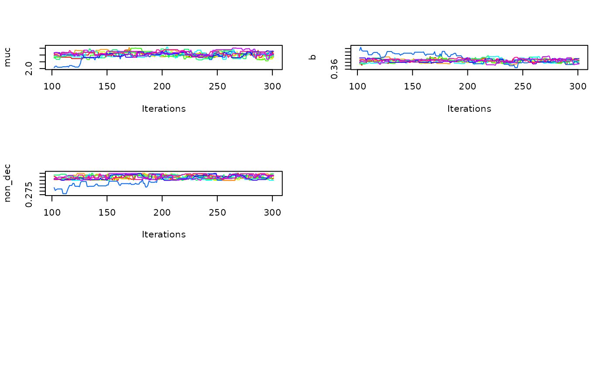
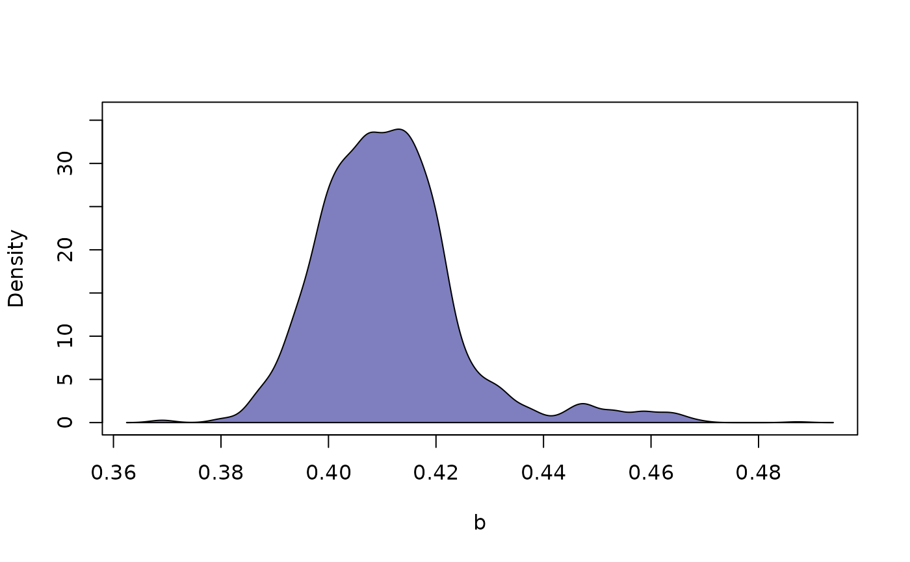

Visualize MCMC results and diagnostics for mcmc_dm objects.
The function plot.mcmc() is typically called when users supply an
objects returned by estimate_bayesian() to the generic
base::plot() function.
Usage
# S3 method for class 'mcmc_dm'
plot(x, ..., id = NULL, what = "trace", bundle_plots = TRUE)Arguments
- x
an object of class
mcmc_dm, as returned byestimate_bayesian().- ...
optional arguments passed on to the underlying plotting functions
plot_mcmc_trace(),plot_mcmc_marginal(), andplot_mcmc_auto(). See the respective documentations for a list of optional arguments and the examples below. Probably the most relevant optional argument iswhich_prmsthat allows users to select a specific subset of parameters.- id
optional character vector, specifying the id(s) of participants to plot. If
length(id) > 1,plot.mcmc_dm()is called recursively, iterating over each entry inid. Eachidmust match with the relevant dimension names of the used chains array stored inx.- what
a character string indicating the type of plot to produce. Must be either
"trace","density", or"auto". See the Details below. Default is"trace".- bundle_plots
logical, indicating whether to display separate panels in a single plot layout (
FALSE), or to plot them separately (TRUE).
Details
This function provides diagnostic and summary visualizations of MCMC samples. It handles results from both hierarchical and non-hierarchical MCMC runs:
If
idis provided, the plot refers to the requested participant, with MCMC results extracted at the individual level.If
idis omitted, plots refer to group-level parameters (i.e., the hyperparameters)
The following plot types are supported:
Trace plots (
what = "trace"): These plots show sampled parameter values across MCMC iterations for each chain. They are primarily used to inspect convergence and mixing behavior. Ideally, all chains should appear well-mixed (i.e., they should overlap and sample in a similar range). Lack of convergence is indicated by chains that remain in separate regions or exhibit trends over time.Density plots (
what = "density"): These plots display smoothed marginal posterior distributions for each parameter, collapsed over chains and iterations. They are useful for understanding the central tendency, variance, and shape of the posterior distributions.Autocorrelation plots (
what = "auto"): These plots display the autocorrelation at different lags, averaged across chains. They are useful to judge how quickly the chains produced independent samples.
Examples
# get an examplary `mcmc_dm` object
chains_obj <- get_example_fits("mcmc")
plot(chains_obj)

plot(chains_obj, what = "density")
plot(chains_obj, what = "density", which_prm = "b", bundle_plots = FALSE)
